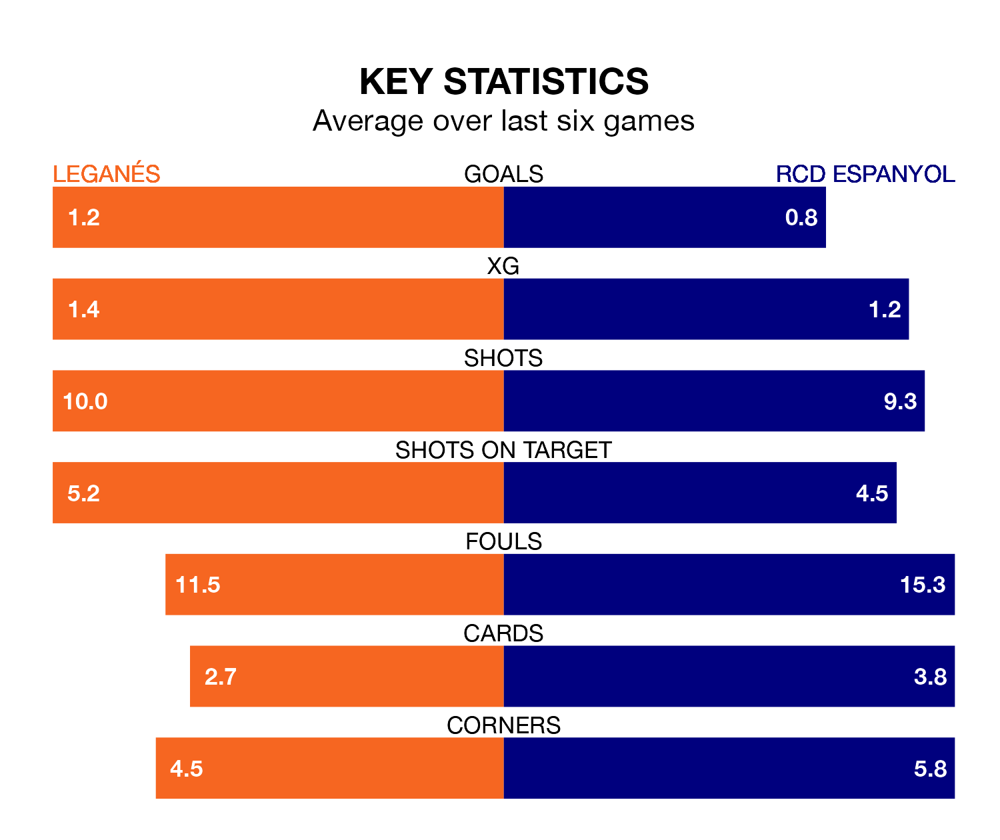

The Segunda División's top two sides face each other at Estadio Municipal de Butarque in Friday's late kick-off, when Leganés host second-placed RCD Espanyol.
Leganés have picked up 17 wins and 10 draws from 34 games so far this season, and sit four points above the visitors going into the 7.30pm match.
Espanyol, meanwhile, have won 15 and drawn 12, picking up 57 points.
With 51 goals in 34 games so far this season, Espanyol are the league's third-highest scorers with 1.5 goals per game. And they are conceding at an average rate, letting in 36 goals at a rate of 1.1 per game.
Leganés are also above average scorers, with 1.4 goals per game, compared to a league average of 1.1. They have conceded 0.6 goals per game.
In Martin Braithwaite, the away side have the league's sharpest shooter so far this season. He has notched 18 goals in 31 appearances.
His goal rate of one every 145 minutes is quicker than that of Diego García Campos, the hosts' top scorer with a goal every 214 minutes, and a total of 11 goals in 34 games.
In the last 10 years, Leganés and Espanyol have played each other on 11 occasions. Leganés won six of them and Espanyol five.
On average, Leganés scored 1.0 goal and Espanyol 1.0 in those matches.
Their last meeting was on October 20, when Leganés won 1-0 away.
Leganés are in reasonable form in the Segunda División, with three wins and two draws from their last six games.
With two wins and four draws over that period, Espanyol's form is slightly worse – they have taken 10 points from 18, compared to Leganés's 11.
Leganés's last match was on Sunday, a 0-0 draw against SD Huesca.
Espanyol beat Albacete Balompié 2-1 last time out, also on Sunday, with Jofre Carreras Pagès and Nicolás Melamed on the scoresheet.
Updated: 14:47 (UTC), 09/04/24